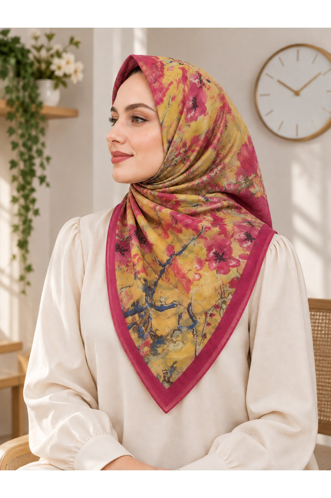

Kış sergisi
4 eser · 2 sanatçı
No. 01
Van Gogh Badem Ağacı İpek Şal 70×180
Vincent van Gogh, 1890
1.199 TL İpek

No. 02
Klimt Çiçek Bahçesi İpek Şal 70×180
Gustav Klimt, 1907
1.199 TL İpek Son 1 adet

No. 03
Van Gogh Zambaklar İpek Şal 65×190
Vincent van Gogh, 1889
Satıldı
“Kırmızı nokta, galerilerde eserin yeni sahibini bulduğunu söyler. Bizde de öyle: her desenden yalnızca birkaç parça var.”

No. 04
Van Gogh Badem Çiçeği İpek Eşarp 95×95
Vincent van Gogh, 1890
1.099 TL İpek